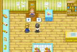

| Va para o mercadinho nas Segundas, quintas ou sabados entre as 10am e 1pm. Karen cozinhou algo na cozinha. Ela anda para tras e conta a seus pais que a confidencia dela tem sido um sucesso desta vez. A mae dela e o seu pai estao nervosos e depois concordam que ela deve ter conseguido. Karen pergunta a seus pais se eles gostariam de experimentar o que ela fez! O pobre Jeff sorri e pergunta por que ela quer que eles experimentem sua comida, entao Karen conta a eles que ela quer saber se esta boa a comida. Sasha susurra para Jeff que a comida de Karen provalvelmente deixare eles doentes. Jeff susurra de volta que eles provavelmente tem que experimentar so assim nao ira machucar os sentimentos de sua filha. Eles sabem que sua garota nao e boa em cozinhar nada! De repente o problema de estomago de Jeff comeca de novo e ele nao pode comer a comida dela. Karen entao ve voce caminhar, um deleite para Jeff e Sasha! Os dois estao felizes que voce chegou. Jeff entao pede que voce experimente a comida de Karen. Se voce concordar entao voce segue para a cozinha enquanto Jeff e Sasha ficam na loja e suavemente pdem desculpas pela punicao que voce vai resistir. |
 |